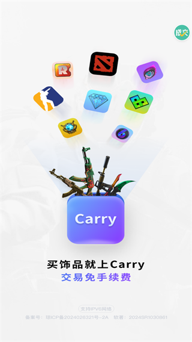
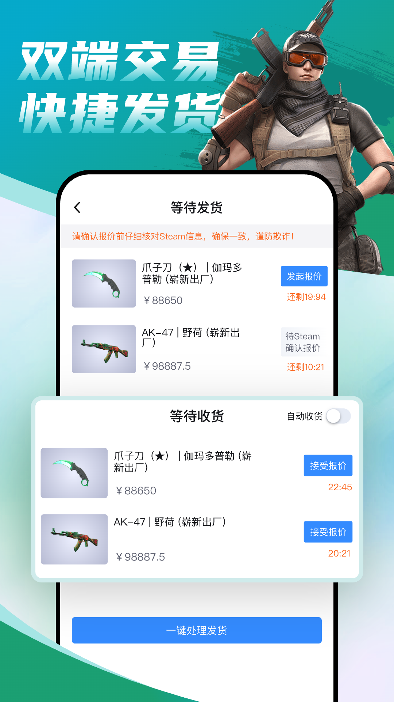

CS2 饰品交易平台 Carry 深度对比：玄学筛选 + 倒计时发货，它凭什么在同类里杀出一条路
用过好几个 CS 饰品交易工具之后，Carry 给我留下最特殊的印象是它对淬火蓝图的支持和发货面板的硬约束设计。本文从老玩家视角拆解它的差异化优势与取舍，帮你判断是否值得换过去。
CS 饰品交易这个赛道，已经卷得不能再卷了。大厂方案占着流量入口，老牌工具靠口碑维持基本盘，新冒头的要么抄模板、要么砸补贴。在这样的格局下，Carry 没有走"拼低价"也没有走"堆功能"，而是选了一条更窄的路——把老玩家真正在意的几个痛点砸透。
用了几个月下来，我最直观的感受是：它不是给新手做的小白工具，而是给那种每天泡市场、懂磨损懂模板、手里经常挂单收东西的重度玩家设计的。如果你属于后者，Carry 的一些细节设计会让你拍大腿；如果你只是偶尔买个皮肤图省事，可能会觉得"这不都一样"。

同类软件格局：大家都在做什么
在深入 Carry 之前，先快速拉一下这个类目的坐标系。目前市面上的 CS 饰品交易工具大致分三档：
第一档是 Steam 自带的社区市场，零手续费但抽成 5%，而且汇率硬吃；第二档是各类第三方交易平台，手续费普遍在 2%~5% 之间，体验参差不齐；第三档是走"免手续费"路线的新平台，靠活动拉新、靠后期变现。
而它的官网上对这两种说法的来源也有明确说明，实际下单时以订单页实时显示为准，确实不像某些平台藏着掖着。
Carry 的三个差异化：别家用了都说好，换别家找不到
一、淬火蓝图直筛：玄学玩家的刚需
这是我觉得 Carry 最有辨识度的一个功能。
CS2 的淬火皮肤是出了名的"玄学"——同一款皮肤，模板编号差一位数，蓝量分布可能天差地别，价格能差十倍。大多数同类工具的搜索筛选只做到"磨损值""品质""价位"这几个常规维度，模板编号这个硬参数，要么得手动翻第三方对照表，要么压根没做进筛选器。
Carry 不一样。它的市场搜索直接支持按模板编号过滤，Carry文档里有专门的模板筛选指南，应用内检视页面的详情区也会明确标出"模板 XXXX"和"皮肤编号 XXX"。这意味着如果你心里有具体想收的 Blue Gem 模板号，不用在海量商品里用肉眼逐个排查，直接输编号就能锁定候选。
别小看这一点——淬火玩家都懂，找对模板号比看磨损值还重要。把社区公认的名牌模板（比如某些廓尔喀刀的全蓝模板 302）直接做成筛选维度，是真正懂行的人才会做的产品决策。
二、发货面板硬约束：倒计时是真倒计时
交易流程里最容易掉链子的环节是什么？卖家不发货、买家不收报价、两边磨磨蹭蹭错过窗口期。很多平台在这一块的处理就是"超期自动取消"，但中间那段等待期的体验很粗糙。
Carry 的发货管理面板把这件事做得很细：
- 卖家侧每笔订单都显示倒计时，发起报价和等待 Steam 确认是两个不同状态，各自算时间；
- 买家侧有自动收货开关，开启后系统自动确认入库，省掉手动点的那一下；
- 超时后不是冷冰冰的"订单已取消"，而是给明确的处理路径——买家走申请入口，卖家等报价超时回收，饰品直接回库存。
我试过同时在 Carry 和另一家平台挂单，后者发货提醒要么弹得太晚、要么干脆不弹，而 Carry 的倒计时数字就挂在面板上，拖不得。这种"硬约束"设计，对于不想错过报价时效的卖家来说是真省心。

三、求购侧不冻结余额：资金占用更灵活
这一点属于"隐性优势"，不用的人可能注意不到，但用起来就回不去了。
很多平台的求购机制是：挂求购单时先冻结对应的余额，有人卖给你了才扣、没人卖就一直冻着。对于经常同时挂好几个求购的人来说，资金链容易被卡住。Carry 的做法是求购免压、不冻结余额——你挂的求购只是一个"我想要"的声明，真有人匹配上了才走交易流程，余额该怎么用还怎么用。
这听起来像是"理所当然应该这样"，但实际做得到的平台真不多。多数要么是技术上懒得改，要么是故意冻结资金来增强用户粘性。
它的取舍：这些优势是有代价的
说了三个好，也得说三个"不够好"的地方，避免你看完头脑一热就全迁过来。
上手门槛略高。 应用内检视页面展示的模板编号、皮肤编号这些参数，对新手来说可能"这都啥"。如果你刚入坑，连磨损值都没搞清楚，Carry 的信息密度会让你有点懵。它不像某些平台那样把所有操作都简化成"一键买卖"，而是默认你已经知道自己在干嘛。
安卓安装有额外步骤。 安装包从官方下载拿就好，不走应用商店。安卓首次安装时需要手动打开"允许安装未知应用"权限，而且授权对象是下载来源应用（浏览器或网盘），不是 Carry 本身——这个细节很容易找错位置。文档站有专门的图文说明，但对于不熟悉安卓权限体系的用户来说还是多了一道门槛。
手续费口径容易混淆。 应用商店描述和宣传图上的说法不一样，虽然订单页实时显示的数字才是准的，但新用户第一次看到时大概率会疑惑"到底按哪个算"。这不是技术问题，是运营和市场宣传没对齐。
选购结论：什么样的人选它，什么样的人换别家
我的建议很明确：
- 重度玩家、玄学爱好者、经常挂单收东西的卖家：选 Carry。淬火蓝图筛选、发货面板倒计时、求购不冻结余额这三个点，每一个都能实实在在帮你省时间、少踩坑，综合体验是值得迁移成本的。
- 轻度玩家、偶尔买个皮肤图省事的人：用哪家都行，Carry 的差异化对你来说感知不到。选一个你已经有账号的平台继续用就好，没必要特意换。
- 新手入门：先别急着装。等你把磨损值、模板编号、Steam 令牌这些基础概念搞清楚了，再来体验它的效率优势。
最后给一句推荐语：如果你已经是 CS2 饰品交易的老玩家，想要一款真正站在你角度设计的工具，Carry 值得一试——尤其是它对淬火玩家的那点心思，同类里真不多见。
顺带说一句，这款应用的完整资料我同步维护在三个仓库里，方便不同网络环境下查阅：GitHub 主库、Gitee 国内镜像、GitCode 备用副本，内容一致就近选。